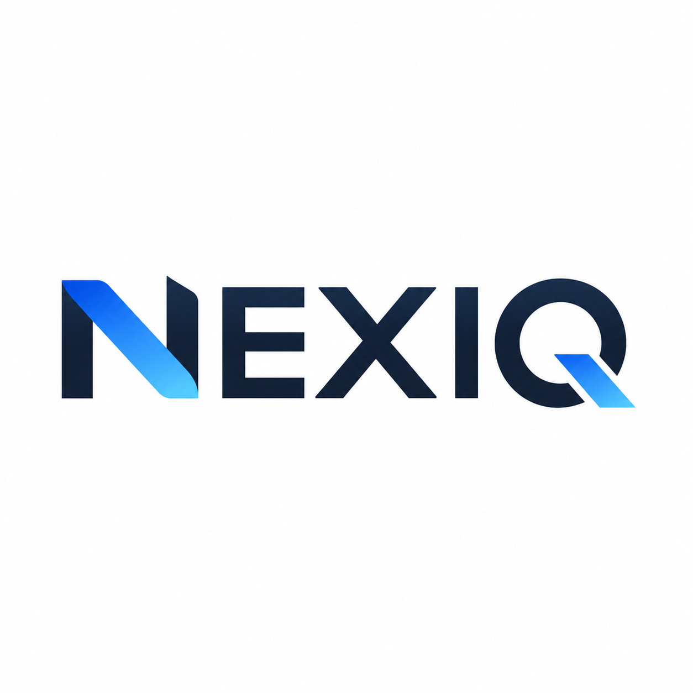

One intelligence view
Consolidate department reports into a consistent management format that is easier to review and compare.

MIS & data analytics department
Next-Generation Intelligence
NEXIQ brings every important business report into one disciplined intelligence process. Our data analytics team studies the information, identifies what management needs to know, prepares clear presentations and reports, and defines the next required action.
View MIS & analytics serviceHow NEXIQ works
Receive structured reports from sales, purchase, inventory, finance, HR, operations, and other departments.
Check completeness, compare periods, examine trends, and understand what changed and why.
Identify strengths, gaps, risks, exceptions, opportunities, and the issues that need management attention.
Prepare clear MIS reports and management presentations with evidence, summaries, and practical conclusions.
Recommend the next required action, priority, responsible owner, expected outcome, and follow-up point.
Consolidate department reports into a consistent management format that is easier to review and compare.
Review patterns, variances, ratios, operational signals, and emerging risks behind the headline numbers.
Translate complex information into concise presentations, visual summaries, and decision-ready reports.
Close every review with specific required actions so findings lead to accountable business improvement.
Management deliverables